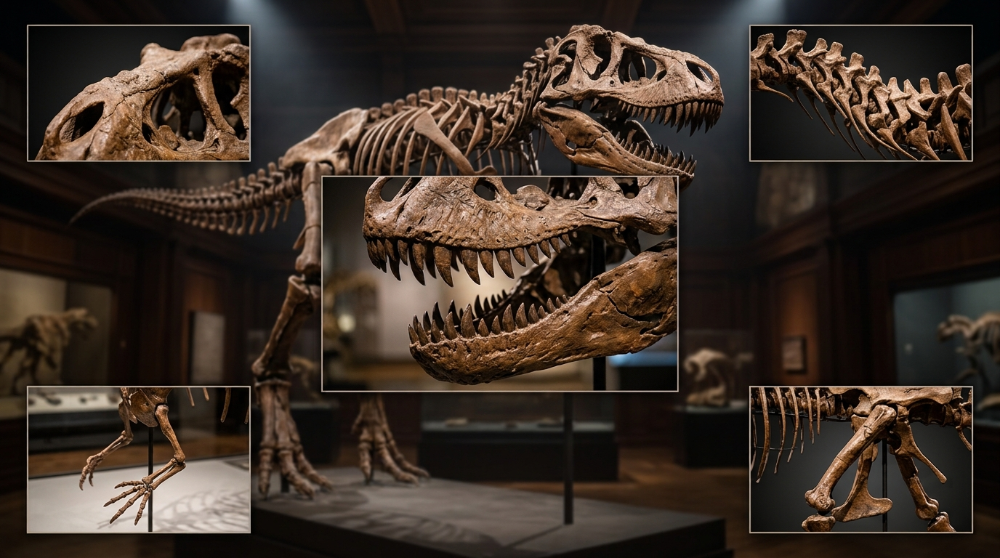

1. Crista Craniana
Estende-se longitudinalmente a partir da junção dos ossos frontais até a crista nucal, na porção posterior do teto craniano.
2. Vértebras Cervicais
Era uma estrutura anatômica altamente especializada, projetada exclusivamente para suportar e movimentar o crânio maciço do animal, distribuindo as forças biomegânicas de sua mordida esmagadora.
3. Mandíbula de Dentes Serrilhados
Constituem um dos sistemas biomecânicos de predação mais extremos da história evolutiva da Terra. Ao contrário de outros dinossauros terópodes que possuísem dentes finos como lâminas para cortar carne, o T. rex evoluiu para uma estratégia de alimentação do tipo "perfurar e puxar" (puncture-pull), capaz de esmagar ossos e arrancar grandes blocos de massa muscular.
4. Membros Anteriores Pequenos
Mediam cerca de 1 metro de comprimento em um animal de 12 a 13 metros, mas eram extremamente robustos, musculosos e equipados com apenas dois dedos funcionais terminados em garras afiadas de até 10 centímetros.
5. Fêmur Pélvico
Uma das estruturas biomecânicas mais robustas e evoluídas entre os terópodes gigantes, projetada especificamente para suportar uma locomoção bípede de alta massa (entre 8 a 10 toneladas).